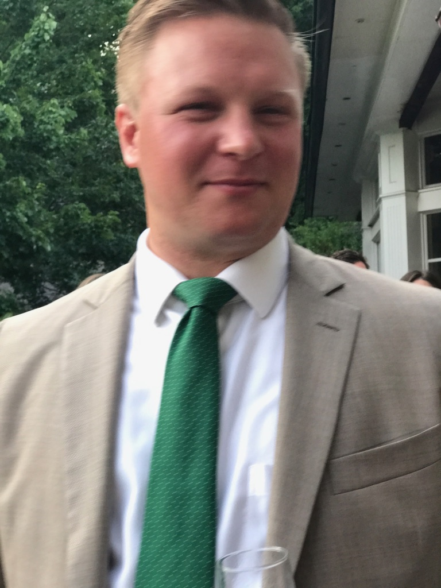

About Me
"Yes, I am a pirate 200 years too late! Kyle, a long-time Jimmy Buffett fan, can relate. Kyle spent his years growing near the Chesapeake Bay, sailing, crabbing and spending hours on the beach. After graduating from college in 2004 from the Virginia Military Institute, Kyle joined the US Navy, serving for almost six years and, and crossing the entire world by water during his time of service. Since leaving full-time sea duty, Kyle achieve a great feat in a mariner's resume: he learned to navigate by the stars and crossed a major sea by sail. This feat required three and a half weeks of vacation from his new Manhattan consulting job, but he was determined nevertheless. Since earning the Offshore Captain Certification from the American Sailing Association through completion of that long journey, Kyle has taken to the island of Manhattan to save for the next, skills testing trip. Kyle has been left singing, "I got to stop wishing; I got to go fishing down to rock bottom again, just a few friends, just a few friends..."